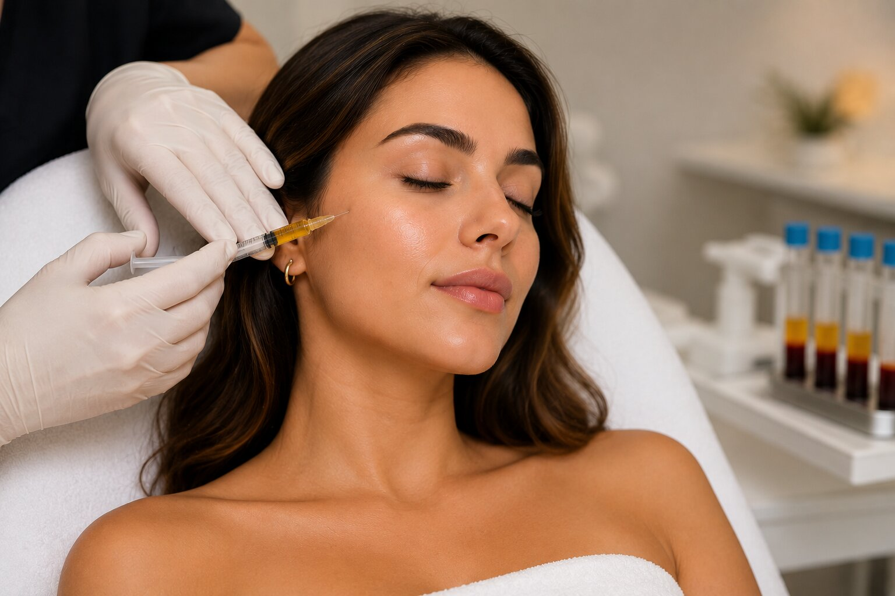

PRP & PRF Therapy in Reston, Aldie & Northern Virginia
Natural-looking rejuvenation using your body’s own growth factors.
PRP and PRF therapies use concentrated components from your own blood to support skin rejuvenation, collagen production, hair restoration support, and overall tissue renewal.
At INFUDERM, PRP and PRF treatments are personalized based on your goals, anatomy, skin quality, hair concerns, and long-term wellness objectives.

Regenerative Aesthetic Treatments Using Your Own Blood
PRP stands for Platelet-Rich Plasma, and PRF stands for Platelet-Rich Fibrin. Both treatments involve drawing a small amount of your blood, processing it, and using the concentrated platelets and growth factors as part of a personalized rejuvenation plan.
These treatments are commonly used to support skin quality, collagen stimulation, hair restoration, texture improvement, and natural-looking rejuvenation.
What Is PRP?
Platelet-Rich Plasma is created by processing a blood sample to concentrate platelets and plasma. PRP contains growth factors that may support collagen production, skin renewal, and tissue repair processes.
- Often used for skin rejuvenation
- Can support collagen stimulation
- May be combined with microneedling or Morpheus8®
- Commonly used in hair restoration protocols
What Is PRF?
Platelet-Rich Fibrin contains platelets, fibrin, and growth factors. PRF forms a fibrin matrix, which can allow a slower release of growth factors over time.
- Often selected for natural-looking rejuvenation
- Supports tissue quality and collagen stimulation
- May be used in delicate facial areas
- Can be part of personalized skin or hair plans
Benefits of PRP & PRF Therapy
Patients choose PRP and PRF because these treatments use your body’s own components to support natural-looking rejuvenation and long-term skin quality.
Supports Collagen Production
Helps encourage the skin’s natural repair and renewal processes.
Improves Skin Quality
May support smoother texture, better tone, and healthier-looking skin.
Hair Restoration Support
Can be used to support scalp health and hair restoration plans.
Natural-Looking Results
Uses your own platelets and growth factors for subtle rejuvenation.
Combination Treatment Options
Can be combined with microneedling, Morpheus8®, or other aesthetic treatments.
Personalized Care
Treatment plans are tailored to your goals, concerns, and provider evaluation.
Common PRP & PRF Treatment Goals
- Fine lines and wrinkles
- Skin texture concerns
- Dull skin tone
- Overall skin quality
- Acne scar support when combined with skin treatments
- Hair thinning concerns
- Collagen support
- Natural facial rejuvenation
Where Can PRP & PRF Be Used?
- Face
- Under-eye area when appropriate
- Cheeks
- Neck
- Décolletage
- Scalp for hair restoration support
- Areas treated with microneedling
- Areas treated with Morpheus8®
PRP & PRF for Hair Restoration Support
PRP and PRF are commonly used in hair restoration plans to support scalp health and encourage stronger, healthier-looking hair.
Treatment recommendations depend on your hair concerns, medical history, scalp health, and provider evaluation.
- Supports scalp health
- May support hair density goals
- Often performed as a series of sessions
- Personalized based on hair restoration needs
PRP & PRF for Skin Rejuvenation
PRP and PRF may be used to support skin texture, tone, collagen production, and overall skin quality. These treatments are often selected by patients seeking natural-looking rejuvenation.
- Supports smoother-looking skin
- May improve overall radiance
- Can support collagen remodeling
- Often combined with microneedling or Morpheus8®
What to Expect During PRP / PRF Treatment
Your treatment plan is personalized based on your goals and selected treatment area.
Consultation
Your provider reviews your medical history, treatment goals, skin or hair concerns, and candidacy.
Blood Draw
A small amount of blood is drawn for processing.
Processing
The sample is processed to separate and concentrate PRP or PRF components.
Application or Injection
PRP or PRF is applied or injected based on your treatment plan and the procedure selected.
Aftercare
Your provider reviews recovery expectations and aftercare instructions.
PRP / PRF With Microneedling or Morpheus8®
PRP and PRF can be combined with other collagen-stimulating treatments to support enhanced rejuvenation.
- Microneedling with PRP or PRF
- Morpheus8® with PRP
- Skin rejuvenation treatment plans
- Hair restoration programs
Your provider will recommend whether combination treatment is appropriate for your goals.
When Will I See Results?
PRP and PRF results develop gradually. Some patients notice early improvements in skin glow and texture, while collagen and hair-related outcomes may continue to develop over several weeks to months.
Individual results vary depending on treatment area, number of sessions, age, skin condition, hair concerns, and overall health factors.
PRP / PRF Pre-Care
- Arrive well hydrated when possible
- Follow provider instructions regarding medications and supplements
- Arrive with clean skin if treating the face
- Share your full medical history
- Discuss hair, skin, or aesthetic goals in detail
PRP / PRF Aftercare
- Follow all provider instructions
- Avoid harsh skincare until advised
- Use sunscreen when treating exposed skin
- Avoid unnecessary irritation to the treatment area
- Contact INFUDERM with questions after your appointment
Who Is a Good Candidate?
- Want natural-looking skin rejuvenation
- Want collagen support
- Have texture or tone concerns
- Are interested in hair restoration support
- Want to combine PRP/PRF with microneedling or Morpheus8®
- Prefer a treatment using your own blood-derived components
Who Should Avoid PRP / PRF?
- Active infections
- Certain blood disorders
- Open wounds in the treatment area
- Specific medication considerations
- Certain medical conditions
- Pregnancy or nursing, depending on provider guidance
A consultation is required to determine candidacy.
How Much Does PRP / PRF Therapy Cost?
The cost varies based on treatment area, number of sessions, treatment goals, and whether PRP/PRF is combined with other services.
- Skin vs hair restoration treatment
- PRP vs PRF selection
- Number of treatment areas
- Series of sessions recommended
- Combination with microneedling or Morpheus8®
Personalized pricing is provided during consultation.
Personalized Care. Natural Rejuvenation. Medical Precision.
- Personalized consultation and treatment planning
- Careful medical history review
- Options for skin and hair restoration support
- Combination treatment planning when appropriate
- Safety-focused patient experience
- Natural-looking aesthetic goals
PRP & PRF Therapy FAQs
PRP therapy uses platelet-rich plasma derived from your own blood to support collagen production, skin rejuvenation, and tissue renewal.
PRF therapy uses platelet-rich fibrin, which contains platelets, fibrin, and growth factors that release more gradually over time.
PRP is platelet-rich plasma, while PRF includes a fibrin matrix that allows a slower release of growth factors.
PRP and PRF are commonly used in hair restoration plans to support scalp health and encourage stronger, healthier-looking hair.
Yes. PRP and PRF may support improved skin texture, tone, firmness, and overall skin quality.
Yes. PRP or PRF may be combined with microneedling to support collagen stimulation and skin renewal.
Yes. PRP may be combined with Morpheus8® as part of a customized skin rejuvenation plan.
Treatment recommendations vary. Many patients benefit from a series of sessions based on their goals and provider evaluation.
Results develop gradually over several weeks to months depending on the treatment area and goals.
PRP or PRF may not be appropriate for certain blood disorders, active infections, certain medical conditions, medication considerations, pregnancy, or nursing. Consultation is required.
PRP & PRF Therapy in Reston, Aldie & Northern Virginia
INFUDERM proudly provides PRP and PRF therapy for patients throughout Reston, Aldie, Ashburn, Herndon, Sterling, Chantilly, South Riding, Leesburg, Fairfax, Loudoun County, Fairfax County, and Northern Virginia.
Book Your FREE Consultation
Whether you are interested in skin rejuvenation, collagen support, PRP/PRF with microneedling, Morpheus8® with PRP, or hair restoration support, our team will create a personalized plan designed around your goals.
Book Free Consultation